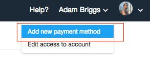
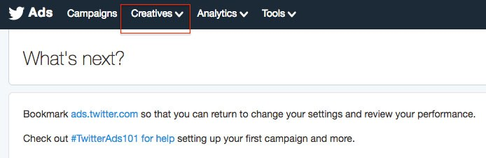
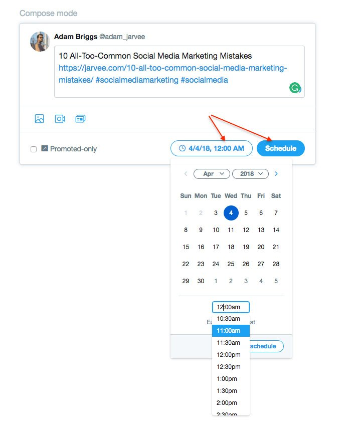
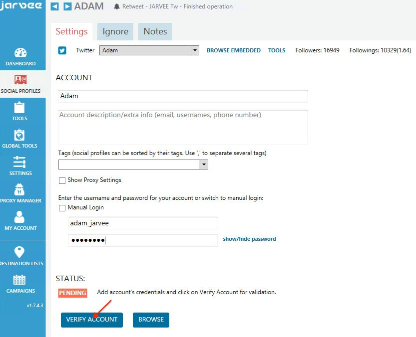
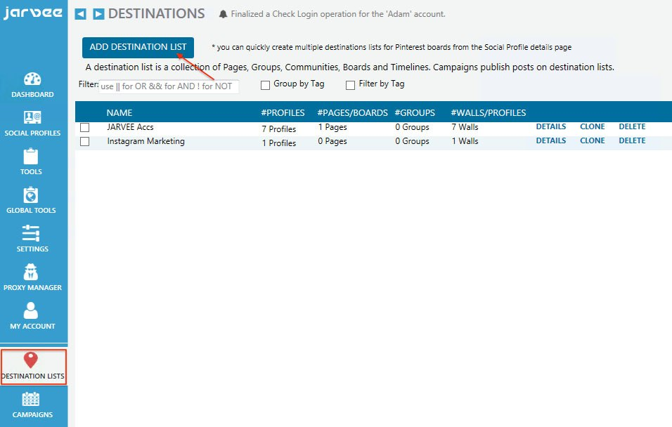

Social Media is still a hot topic these days. Instagram is growing exponentially, reaching over 800 million monthly active users as of the end of 2017. Meanwhile, Twitter is reinventing itself by expanding its character limit for the first time. And now its actively fighting against spam and hate speech, making the platform even more attractive for its users and speeding up its growth that stalled for a brief moment last summer.
These days people read the news first on Twitter, they make their shopping lists on Pinterest, recruiting on LinkedIn and family reunions on Facebook. There’s no doubt that to survive as a business; you need to be present on all the relevant social platforms.
But all these platforms are time-consuming. Researching, curating content, finding the right audience and sharing your content at the right times is getting harder and harder when everything is happening so fast.
In one of my previous blog posts, I showed you how easy it is to Schedule your Post on Facebook and how to use JARVEE to schedule them faster and more efficient. This time, I’ll show you how to use the scheduling capabilities of Twitter itself, to regain one of the most precious assets we can have: time.
We will also discover how to schedule your tweets even faster by using JARVEE.
Setting Up Your Twitter To Enable Scheduler
The scheduling feature on Twitter is not that obvious to every user; that’s why I’m sure it’s extremely underused by social media marketers.
Twitter made this a bit trickier to use, so I’ll show you what you need to do to enable the Scheduler feature for your tweets.
Step #1 First, go to https://ads.twitter.com, choose the Ads tab and select your country and a permanent time zone. Click “Let’s Go” to continue.

Step #2 Go back to https://ads.twitter.com. If you never used Twitter’s ads platform, then you will see only the “Analytics” menu in the top left corner of the screen. To be able to schedule your tweets you need the “Creatives” menu that will appear after you add a payment method. To do this, choose the “Add new payment method” option under your name in the right corner. Don’t worry, your credit card will not be charged. We just need to enter it so that all the other options will appear.

Step 3 As you can see, I have several new menu items like Campaign, Creatives, and Tools. Also, if you look in the top-right corner, right next to your profile picture, you will see a “New Tweet” button.

You now have to options:
- click on the New Tweet button, next to the profile picture. You will enter the Tweet composer screen, where you can write your post, click on the Schedule button and select the date for your post.

- or, from the Creatives menu, select “Tweets”. Click on the New Tweet button and you will enter the same Tweet composer screen where you can add your message and schedule your tweet.
Step 4 After you entered your message and selected the date and time when you want to be posted, you can click on the Schedule button and lastly click Finish. You can view your scheduled tweets any time you want from Creatives > Tweets.

So this is how you schedule your tweets on Twitter. Not too difficult, but a bit tricky to find this feature.
Using JARVEE To Schedule Your Tweets
Now that you know how to schedule your tweets using Twitter let’s see a new and easy way to schedule your tweets, this time using JARVEE. But first, let’s see why you should choose JARVEE.
Top 3 reasons why you should start using JARVEE to schedule your tweets
- Easy set up – If you have multiple Twitter accounts, then setting up your scheduling feature for each one will prove to be a tedious job, unless you use JARVEE. With a few clicks, you can add as many Twitter accounts as you want and start scheduling your content right away.
- No credit card necessary – With Twitter you need to set up your account using your credit card in order for the twitter’s scheduling feature to show up. However, if you have 10 twitter accounts, then you also need 10 credit cards which I know most of us don’t have.
- More scheduling capabilities and automation tools – Scheduling your tweets using Twitter’s feature is very limited as you can tell by watching the screenshots. On the other hand, JARVEE has the ability to schedule your tweets for all of your Twitter accounts in just one setting. You can also upload multiple tweets or hundred of tweets at once using the software instead of manually entering it one by one on twitter and scheduling each of them. You can use spin syntax for your posts, automatically add hashtags and the list goes on.
The point is, if you have 1 twitter account, then using Twitter’s scheduling feature is pretty convenient and may also prove useful, but if you have 2 or more accounts then you may find JARVEE to be a lot more better alternative.
Not to mention that with JARVEE you can add your social accounts for other platforms too, like Facebook, Pinterest, Instagram, LinkedIn, Tumblr, Youtube or Google+. This way you can create cross-platform scheduling campaigns in minutes!
Now let’s see how to set up your tweets using JARVEE.

Step #1 Add your Twitter accounts to JARVEE using the Social Profiles tab by clicking the ADD PROFILE.

Step #2 Enter your login details and click Verify Account and wait for it to be Validated.

Step #3 In the Destination Lists tab, click ADD DESTINATION LIST.
A new window will come up where you can select your Twitter accounts. Make sure you check the checkbox under the “wall” column so that your posts will be published on your Twitter wall. The destination list will be a list of the social accounts where you want to schedule your posts. As you can see is not limited to Twitter only. You can add as many destinations (social profiles, pages or groups) as you want.
Step #4 Create your scheduling Campaign by going to the Campaign tab and clicking ADD CAMPAIGN

If you are going to use Twitter to publish a moderate amount of posts, then always use the STANDARD CAMPAIGN. Standard campaigns are designed to publish updates, statuses, and posts to your wall more efficiently and at optimal times. You just have to choose the number of daily posts and JARVEE will do the rest. However, if you want to choose the exact hours for your posts, then you should choose SCHEDULED CAMPAIGN.
Step #5 A new window will come up where you can edit your campaign settings:

Overview Tab – In the overview tab, you can rename your campaign to any name you want so that you can distinguish it from your other campaigns.

What To Publish Tab – In this tab, you can see different options for your posting sources.
You can
- add a regular Post
- search and add posts from specific URLs from Pinterest, Twitter or Facebook
- add posts from RSS feeds
- set up folders (shared or not) with images so that JARVEE will monitor, extract images and automatically create new posts
- customize your posts with “clickable image” functionality (you can choose a custom image for your links)
- share your page posts to other groups.
- or search and add posts from Flickr
For this example, we will be using a regular post with an image. You can also add multiple posts at once just by clicking the “ADD MULTIPLE TEXT POSTS” button. Or you can add multiple images at once by clicking the “ADD MULTIPLE IMAGE POSTS” button.
After you create the new post, just click the “ADD TO POST LIST” button.

Where To Publish Tab – Select the Destination List that you have already created, and that contains your Twitter accounts where you want to publish.

When To Publish Tab – You can schedule all of your tweets from here. You can select how many posts per day you want to publish and at what times you want your posts to be published. You can also select and deselect the days that you want JARVEE to publish or stop publishing. As you can see, the scheduling feature of JARVEE is very versatile and you can set it up the way you want to.
Step #6 Now all we have to do is to start the campaign that’s it. Just go to the Overview Tab and click the “START PUBLISHING” button and you’re done.
When you have new content, you can just go to the “What to Publish” tab and add your content, or you can just import it from RSS feeds and free up some more time.
Dale Gould says
Thank you Jarvee team for this great explanation. I always first check on the blog to look for solution and then if I don’t find it, I contact you guys since you provide awesome support.
Emerson says
Using Jarvee for my social media automation saved me a lot of time that I can invest on other parts of my business, that’s why I’m so grateful that I found out about you guys. Recently I switched from Standard to Schedule Campaign since I noticed that I get better engagement in some specific hours
Jorge2000 says
As always great tips and explanations from Jarvee stuff. I love it from top to bottom. At the end it’s easier to use Jarvee than the original application. I’m working on Twitter accounts for so long and Jarvee was and is my right hand.
Giorgio Keenan says
I use our RSS feed to get content for out Campaign and this is so awesome. It’s like you have a personal assistant that gets content and posts for you at the optimal time. Thank you Jarvee team for such an amazing tool!
Juzhny says
Tutorials are pure 10 according to European University standard 😀 Even a small child that can read can schedule Twitter posts now on Jarvee.
Vojin Mijatovic says
I’ll do as said, I’ll just start campaign 😀
Jarvee is on that level that it’s almost AI 😀